The Old Theology—Serifs 1891—Quarterly, 25 cts. Special Issue—-January.
ENTERED AT THE POST-OFFICE, AS SECOND CLASS MATTER.
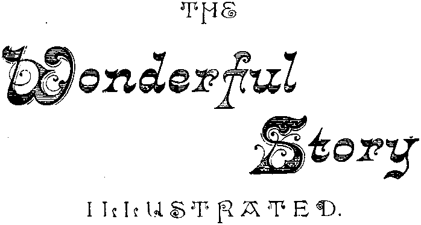• FOR SALE BY LEADING BOOKSELLERS.
—OR—
Sent by us post free on receipt of the price.
PUBLISHED BY THE
Tower TJible & Tract Society, “bible house,” arch st., ALLEGHENY, PA.
COPYRIGHT, 1891.
N. B.—The Wonderful Story without illustrations, and more cheaply gotten up, can be had for gratuitous distribution at 1 cent each, or $10 per thousand, postage paid by us.
“ T’lje jQevereijce of Ixord
Is tlje beginning of Wisdorr|.”—'Psalrg 111 : 10,
^Pfje Wonderful Story
“Satisfies my Lconc5in6s as J^otl^ing else caij do.” 1
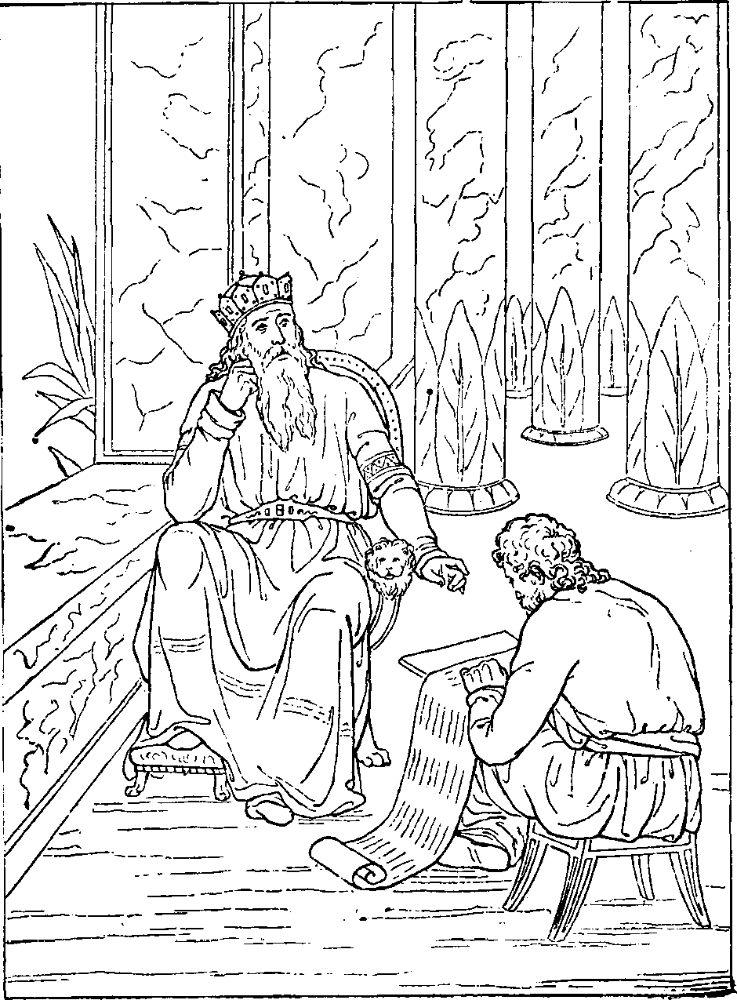**JiiMfe*'*
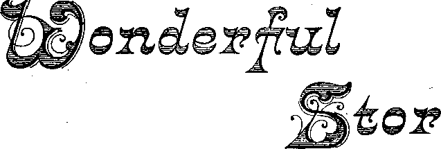---OF---
-«v^U©VE aijd
OIVIJME.
©Id, ©Id Stopy”
TO THE END.
PUBLISHED BY THE
T‘o\ver <©ible & ^ract Society, “bible house,” arch st., ALLEGHENY, PA.
—arjd—
sample copy of T^his valuaole little treatise, 36 pages, will be segt to any address or) receipt a two^ceijt postage stamp.
ADDRESS ORDERS TO
Tower Bible & H^raet Society, " & * “BT3LE HOUSE”—ARCH ST,,
ALLEGHENY, PA.
$
We caii Pjeartily commend, eis a rrjost valuable jdelpirjg jdand to Bible students, a 35Chpage volume entitled
Ti-je
Limp “Leatherette’’ ^Binding, Fifty Ceijts.
For Sale by Leading ‘Booksellers.
Serjt post free by us or) receipt of the price.
THE
WCJWEfJFULt ST0p
THE OLD, OLD STORt,
Earnest Inquirer.—
TELL me the old, old story.
Some say from heav’n above One, Jesus, left great glorjL To show to men God’s Iwe.
Tell me the story simply, As to a little child;
For I with sin am wearied, Dissatisfied, defiled.
Tell me the story slowly, That I may take it in—
That story of redemption, God’s remedy for sin.
Tell me the story clearly, How Christ a ransom gave.
O friend, am I the sinner Whom Tesus came to save?
Young Christian.—
Tell me the’story often, For I forget so soon;
The early dew of morning Has passed away at noon.
Tell me,the same old story When you have cause to fear, That this world’s empty glory Is costing me too dear.
Christian in affliction.— Tell n|l the story always, If you would really be, In any time of trouble, A comforter to me.
Tell me the story sweetly, In calm and soothing strain, And let its blessed message Refresh my soul again.
Yes, and while coming glory Is dawning on my soul, Tell me the old, old story: ’Twill help me reach the goal.
T'Fje Wonderful Story
to NJake ’Ptjee AVise unto Salvatiog/’
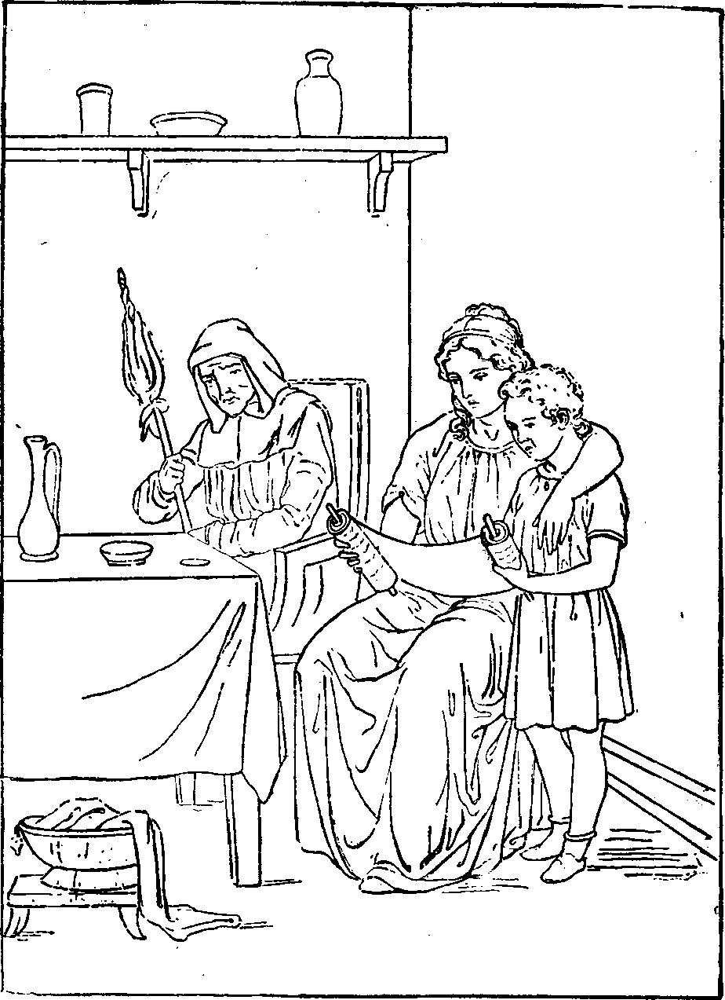From a Child thou (Timothy) hast Known the Holy Scriptures, Which are Able to Make Thee Wise unto Salvation, through
Faith, Which is in Christ Jesus.”—2 Tim. 3:1$'
“ Thy Words were Found and I did Eat Them.” —Jer. l$ : 16.
“ All Scripture given by Inspiration of God is Profitable, that the Man of God may be Perfect, Thoroughly Furnished unto All Good Works.”— 2 Tim. 3 : 16, 17.
THE RESPONSE.
You ask me for the story How Jesus, from above, Left all his heavenly glory, To prove that God is love.
Well, you shall have the story, The old, old story, too;
And I am pleased to tell it; To me ’tis always new.
I’d gladly tell to some one These tidings every day.
I never should grow weary Of pointing out the way—
The way to life and glory, Whose end is bliss complete, In which the blest old story Directs our willing feet.
And as you hear these tidings Of joy and peace, you’ll see They’re not the awful warnings Of endless misery;—
Of a death “ whose pang outlasts The quiv’ring, fleeting breath,” Round which “eternal horrors hang,” A never dying death.
And this, the hopeless doom for all Except a “ little flock.”
You see they do not comprehend The precious old, old Book—
But as the herald angels sang, Good news without alloy, 2
Which yet “shall to all people be Good tidings of great joy.”
The story of our mournful fall f From Eden’s blissful state,
Into the depths of sin and death, J Called pity forth so great— x
That, from his shining courts above, God sent his own dear Son, §
And by his full empowered arm, For us deliv’rance won.
Not in a way which set aside His wise and just decree, That whosoe’er his law defied
Must therefore cease to be, ||
^Ije Wonderful Story
Its J^ecesgity—Vhe Fall — Sig, Sorrow, Oeatlj.
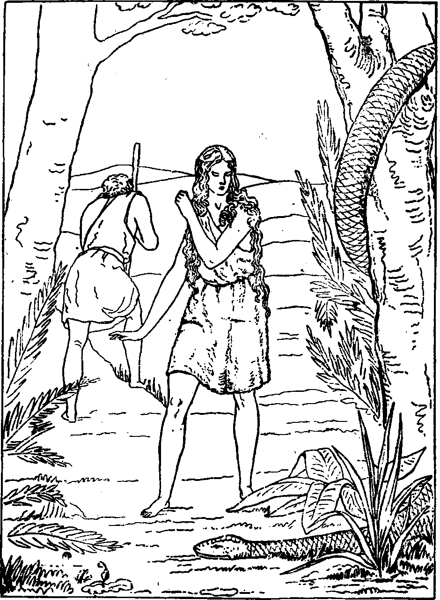** Cursed is the Ground for Thy Sake.—In the Sweat of Thy Face shalt Thou Eat Bread.” And I will put Enmity Between the Serpent and the Woman.—Gen. 3:14-19.
u By One Man’s Disobedience Sin EnterecJ into the World, and Death as a Result of Sin, and so Death Passed upon All because All are Sinners.” “ As by One Man’s Disobedience Many were made Sinners, so by the Obedience of One [Christ] shall Many be made Righteous.”—Rom. 5 : I2> J9-
But by rend’ring unto Justice The fullest satisfaction, *
That thus he might be just, and still
Perform the great transaction—
Saving a lost and ruined race To endless life and glory.
This is the burden of his plan, So I’ll begin the story.
THE FALL AND THE PROMISED REMEDY.
In Eden’s pleasant garden f
God placed a perfect pair;
Their surroundings were delightful, Their eternal prospects fair.
But soon they disobeyed him
In the only thing denied: J Forbidden fruit they tasted, So in course of time they died.
Yet even with this sentence, God’s mercy was declared §
In a promise of redemption, Through the woman’s seed prepar’d.
Yes, one of Eve’s descendants Should bring to all the rest
The boon of life thus promised, And all through him be blest.
*Rom. 3: 24-26; fGen. 2:8-1$; f2:16; g 3:15.
He should indeed be Son of Eve, But Son of God as well; * And bring a full salvation, f The Holy Scriptures tell.
Thus as a new creation—
The Son of God by Eve, No trace of condemnation
Would he from man receive. J
Thus escaping condemnation That fell on Adam’s race.
As a suitable oblation
He’d take the sinner’s place.
He did not come of sinful blood, Though by a human mother, His spotless life wak but transferred When he became our Brother.
And thus for us was he made poor Who once in glory reigned, § Eternal riches to secure
For man, to life regained.
THE FULFILMENT BEGUN.
1 V
Four thousand years had passed away, Adam and Eve had died,
And all mankind were struggling In death’s o’erwhelming tide.
* Luke 1:35 ; f I Tim. 2: 5, 6; J Matt. 1: 20-23; Heb. 7 : 26; % Phil. 2: 6-9.
’Ptje 'Wonderful Story
*‘Jde plumbled plimself—Jde wag NJade Ples^.”
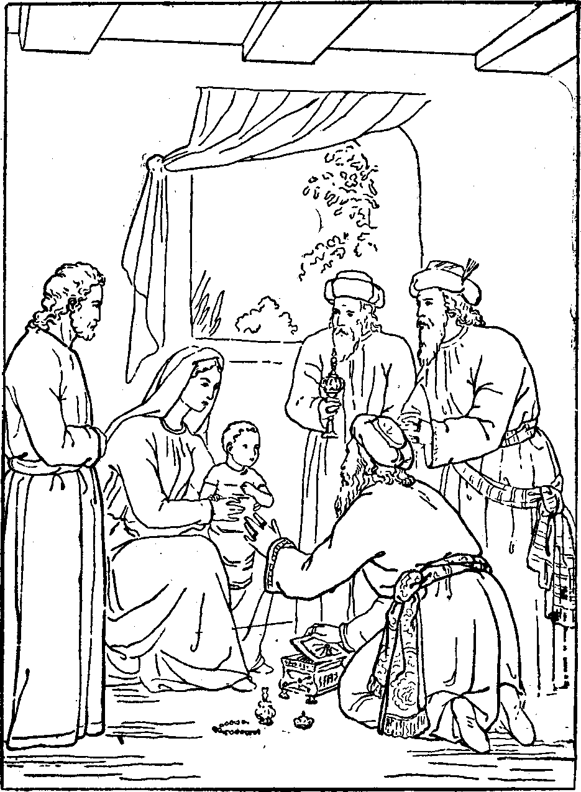** And when the Wise Men were copte into the house, They Saw the Young Child, with Mary his Mother; and They fell down and Worshiped Him—and presented unto Him Gifts. "—Matt. a
“ Fear not; for Behold, I Bring you Good Tidings of Great Joy, which Shall Be to All People.— Glory to God in the Highest, on Earth Peace, Good Will toward Men.”—Luke 2: 10-14.
One night some shepherds, watching On fair Judea’s plains, * A heavenly light saw streaming, And heard angelic strains.
A beautiful holy angel f
Had come from heaven above, To tell the then new story
Of God’s and Christ’s great love.
[It was not only love of Christ, J But of Jehovah first,
Who planned the great deliv’rance, The bands of death to burst;
Who “sent” his well-beloved Son, The idol of his heart,
And thus his love commended § By a sacrificer’s part.
In this great plan his love devised, Which Christ was pleased with too: Both love of God and love of Christ || Are thus brought to our view.]
He came to bring good tidings— Saying, You must not fear;
For Christ, your new-born Savior, Lies in the village near.
*f Luke 2: 8-12. J John 3:16,17. g Rom. 5 : 8. || Heb.iO: 4-7 ; Psa. 40: 7,8.
And a multitude of angels * Joined in an anthem then:
“ Glory to God in the highest!
Peace on earth ! Good will to men !”
And was that strange new story true? They Avent at once to see, f
And found the babe in a manger.
Yes, it was truly he—
The Seed that had been promised So many ages past,
Had come to save lost sinners:
Yes, he had come at last
THE MAN CHRIST JESUS.
The babe to lovely boyhood grew, And then to manhood’s prime;
Then, “ Lo, I come, Thy will to do, O God,” he said, “ not mine.”
He did his work so faithfully;
It was his heart’s delight,
To show the path of duty, From early dawn till night.
He heard of sin and sorrow With sympathetic ear, His words were like a healing balm For trouble and for fear.
‘Tbl'je AVoijderful Story [ NJust be About T^y Father’s ^Business.”
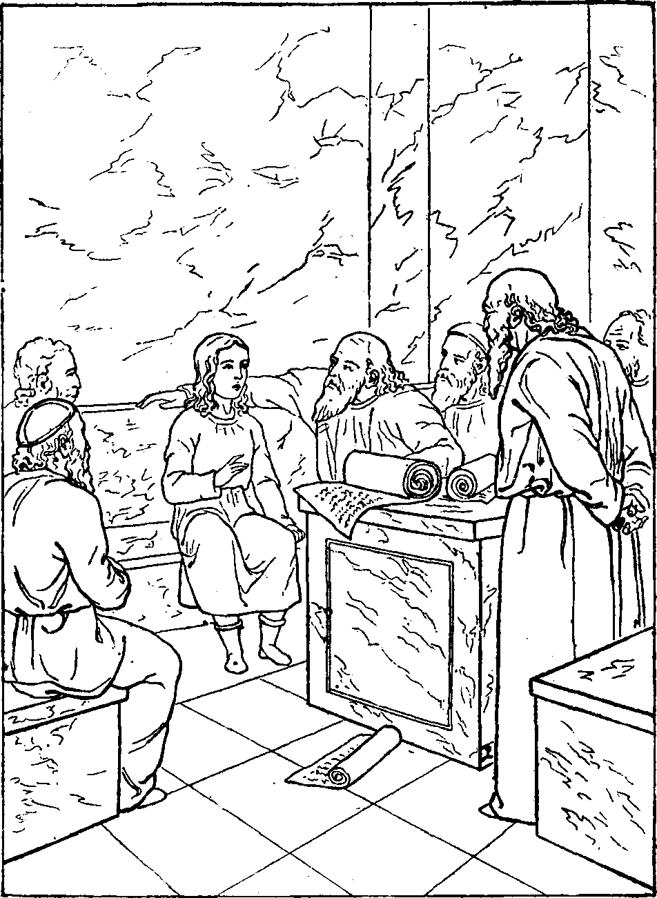After three days They found Him in the Temple, sitting in The Midst of the Doctors, both Hearing Them and Asking them Questions, And All that Heard Him were Astonished.”—Luke 2:46.
** Wist Ye Not that I must be About My Father^ Business?”—Luke 2:49.
“Whosoever doth not Bear His Cross, and Come after Me, Cannot be My Disciple.”—Luke 14: 27.
He, too, was a man of sorrows, 3 Acquainted with our grief, Hence his sympathy a brother's Which brought with it relief.
Indeed, of him it is written, f Our sorrows he did bear, And all our griefs he carried, too;
O, what a load of care!—
And that he bore our sickness, J When he gave the healing balm, And virtue from his body went, § Men’s sufferings to calm.
Thus from the day of his baptism His sacrifice began;
And then he said, “ It is finished,” || When he gave his life for man.
OUR RANSOM SACRIFICE.
Such was “the man Christ Jesus,” Savior of fallen man:
You’ve heard of his death so tragic, Yet part of God’s good plan.
Wicked priests stirred up the people To clamor for his life,
And the Roman Judge was feeble And yielded to their strife.
So the Lamb of God, Christ Jesus, Was crucified and slain,
Though not a proof was given Of any sinful stain.
Meekly for us he bore disgrace And undeserved pain, Submitted to the cruel cross, For our eternal gain.
Look, dear one, if you can bear it, Look at our dying Lord;
Draw near the cross; behold him;
“ Behold the Lamb of God !” * f
How his hands and feet are mangled, And before his loving face, Hard, cruel men stand mocking At his undeserved disgrace.
A crown of thorns they’ve placed upon His truly royal brow;
How little do they comprehend The “King of Glory” now!
* John 1:29; I Pet. 1:19; Rev. 5: 12.
’Plje Wonderful Btory ‘‘’Truly ’Phis was the of @od.H
L r'
** And Jesus cried ’with a Loud Voice, and gave up the Spirit \pf life\. And the. Veil of the Temple was rent inTwain From the Top to the Bottom.”—Mark 15:3^^ 3^'
“ Having therefore, Brethren, Liberty to Enter the Holiest by the Blood of Jesus, By a New and Living Way . . . through the Veil, that is to say, His Flesh . . . Let us Draw Near with a True Heart in Full Assurance of Faith?’—Heb. io: 19-23.
With heartless laugh and cruel scorn They told him to come down, And leave that cross of suffering
And take a kingly crown.
But little did they realize
What cost ’twould be to men, Or that he could have done it *
And spared himself the pain;
And that ’twas love that held him there A willing sacrifice,
Preferring even death to share, To bring to men release.
Yes, he became man’s surety;
The debt we could not pay
He willingly paid for us, On that dark, dreadful day.
For his Bride, the Church, he suffered, 'Twas for our sins he died;
And not for our sins only, f But all the world’s beside.
HOLY, ACCEPTABLE TO GOD.
From infancy to thirty years J The perfect man was coming;
He there, the Lamb acceptable, § Became the world’s sin-off’ring.
*Matt. 26:53,54. f 1 John 2:2. f Num. 4:3; 1 Chron. 23:3; Luke 3 : 23. £ Gen. 22:8; John 1:29,36.
4
At once to John, on Jordan’s banks, He came to symbolize *
His consecration e’en to death, And, too, that he should rise—
Be lifted up by God’s own power, From out the silent grave;
That death, led captive in that hour. Should prove him strong to save.
Thus, with our Lord, this solemn rite
Did a new meaning gain;
No sins had he to wash away, No evil to restrain.
His life, without one sinful spot, Was pleasing in God’s sight: "
Even his enemies found naught J But what was pure and right.
Assured of this, the prophet John From such a task drew back, §
Saying, I’ve need to be baptized of thee, In whom there is no lack.
And comest thou to me, to be Baptized in Jordan’s wave?
Yea, Suffer it to be so now, Said he who came to save.
* Luke 3 : 23. f Heb. 9:14; 1 Pet. 1:19; Matt.
3:17. J John 7 : 46. g Luke 23: 4, 14—22.
Jplje Woijderful Story
®fTl]e Spotless Ltarg b of (s>od —^Ije Sirj*^Bearep.

" The next day after, Joky- stood and two of His Disciples: and Looking upon Jesus as He walked, he saith : Behold the Lamb of God!—And they followed Jesus. ”—John 1:2g, jj, 3b.
“If Ye then be Risen with Christ, Seek those Things which are Above, where Christ Sitteth on the Right Hand of God.”—Col. 3:1.
“ Godliness is Profitable unto All Things, having Promise of the Life that now is, and of That which is to Come.”—I Tim. 4 : 8.
This speaking symbol did proclaim His consecration and his faith1—
That he should rise in God’s own name, Though faithful unto death.
HIS EARTHLY MINISTRY.
His station in life was lowly;
He was a working man: * Hence knew the poor man’s trials
As only a poor man can.
The three years of his ministry After the age of thirty,
Were busy years of toils and cares, Teaching the way of duty:
The duty of love to God and man, Which is the law’s fulfilling; |
And then of trust in God’s great plan To save all who are willing. J
His mighty works in those three years But shadowed forth his glory; §
His kingly ministry will end The scope of this old story.
* Matt. 3 :13,15; Mark 6:3.! Matt. 22 : 37-40; Rom. 13; 10, J Mark 1:15; 9:23; II: 24; John II :4c; Rev. 22:17. JJolm2:ii.
As when he opened blinded eyes, Ancl unstopped deafened ears, And even waked the dead to life, And gave sweet smiles for tears,
So, then, he’ll cause the blind to see, And all the dead shall hear; 4
And his kind hand, from every eye, Shall wipe the falling tear.
Beauty he’ll give for ashes, oil Of joy for heaviness; f
And in the end, with joy and praise, Rightness and peace shall kiss.
In his teaching was the freshness And simplicity of truth,
Which corrected false traditions Men had cherished from their youth.
Many said, “This Jesus speaketh As ne’er before man spake; J
With authority he teacheth:”
Yet his words they would not take.
' ' "Flje Worjclerful Story
Vhe ^)ead shall [dear {dig Voice aqd Conje Forth.
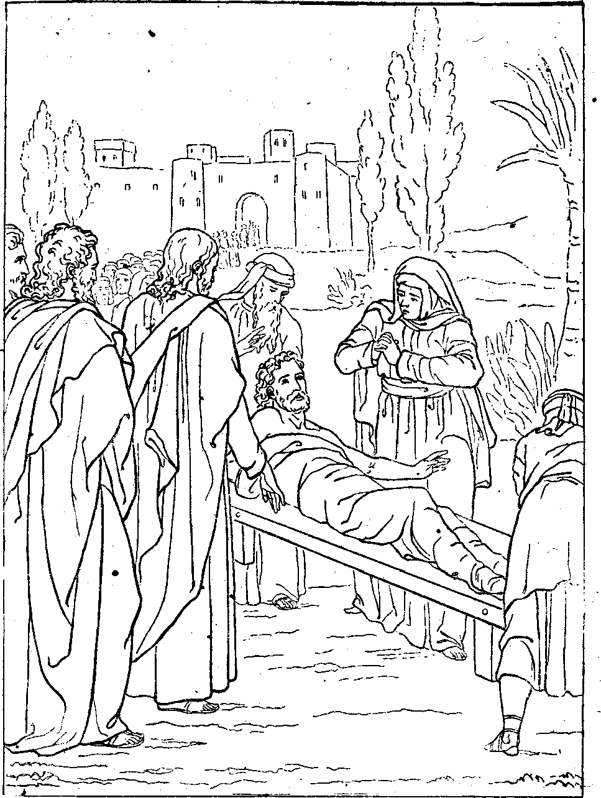“And Jesus came and Touched the Bier: and They that bare it stood still. ‘And he said, Young Man, I say unto Thee, A ise.'”—Luke J :t 4.
These Miracles did Jesus, Manifesting beforehand Coming Glory. Jne. 2 :ri
“ The Redeemed of the Lord shall Return, and Come with Singing unto Zion; and Everlasting Joy shall be upon their Head: They shall obtain Gladness and Joy; and Sorrow and Mourning shall flee Away.”—Isa. 51 : II.
His sacrificed humanity Remains an ofFring still, * Though as the high exalted One He lives to save who will.
HIS COMING REIGN OF GLORY AND BLESSING.
He lives; and at his coming, f He’ll wake men from the dust—
In the glad Millennial morning When all will learn to trust.
Then he’ll banish sin and sorrow J And triumph o’er the grave,
When from death,on that glad morrow, Earth’s ransomed hosts he’ll save.
Yes, at the time appointed
By the Father’s wise decree, § The Times of glad Refreshing
Earth’s blood-bought hosts shall see.
A highway grand he’ll then cast up, And gather out the stones; ||
And up to everlasting life He’ll lead obedient ones.
* Matt. 13 :46; 20: 28; John 6:51; 1 Cor. 15 : 21; 1 Pet. 3 ; 183 Phil. 2:9; Heb. 7 : 25; f Acts 3 :19-21. J Isa. 35 :10; 51: II; I Cor. 15 : 21, 54,57- g Acts 17 131; 3:19-21. || Isa. 35:8; 62,: IO.
No lion shall go up thereon, 5 Nor any ravenous beast;
For all the ills these symbolize, Forevermore must cease.
The desert he will make to bloom
And blossom as the rose; f Beside the lion and the lamb
May the young child repose.
For nothing shall offend or hurt In all his holy mountain; f And evil, sin and death shall be Washed out in Calv’ry’s fountain.
In a thousand years of reigning t He’ll instruct and train and bless;
And fully he’ll establish them In life and righteousness.
To his Father he’ll present them— Pure, blameless, without fault;
And earth’s true lord shall nevermore Be blind or maimed or halt. §
’Pbje Wonderful Story
Vypfled iij Isaac Abraham’^ Seed.—(®al. 3:16,19/
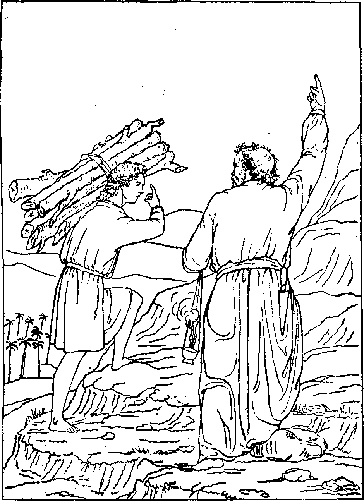"And Isaac said, My Father, behold the fire and the wood; but Where is the Lamb for a Burnt Offering? And Abraham said: My Son, God will provide Himself a La mb Jy—Gen. 22 8.
“ The Spirit Itself Beareth Witness with our Spirit that We are the Children of God: and if Children, then Heirs; Heirs of God, and Joint-heirs with Christ, if so be that we Suffer With Him.”—Rom. 8:16,17,
With lasting joy and singing * Thev’ll come to Zion’s mount:
But of Zion’s wondrous glory
I must give you an account.
JOINT-HEIRS WITH JESUS CHRIST, OUR LORD.
But where begins the story f Of this “Seed of Abraham?”
How can pen portray thy glory, Thou Bride of God’s own Lamb?
True Zion is a “ little flock,”
The Lord’s own faithful few, J Who firmly build upon the rbck
With truths both old and new.
Called to be sons and heirs of God And Bride of his dear Son, §
They sacrifice the earthly good To join the heav’nly One.
They mark the steps their Leader trod, And in his shining track,
With courage high and faith in God, Follow and ne’er turn back—1|
* Isa. 35 :5~io. f Gal. 3 : 29; Rev. 21: 2,9; Eph. 5:31,32. J Luke 12:32; Matt. 7:24; 13:52; 2 Pet. 1: 4. g Rom. 8:28; Gal.4: 7; A6ls 15 :14.
|| Rev. 17:14.
Till life itself goes out in night: Faithful unto the end,
They walk by faith, and not by sight, And every talent spend.
Worthy are they to be his Bride, The Bride of God’s Anointed, 6
Whom, for the work of blessing all, Jehovah hath appointed.
This is the New Jerusalem, J This is the great Mount Zion.
Heav’nly, from God it shall come down;
Its King is Judah’s Lion.
In exaltation these shall shine—
A “ Sun of Righteousness,” J They shall be like their Lord, divine, And men and angels bless. §
Now, in her low and trial state,
Despised and scorned of men,
This “ littleflock,’’the Church of Christ, Delights to follow him.
VZoijderful Story
*phe Precious ©lood of Sprinkling typified.
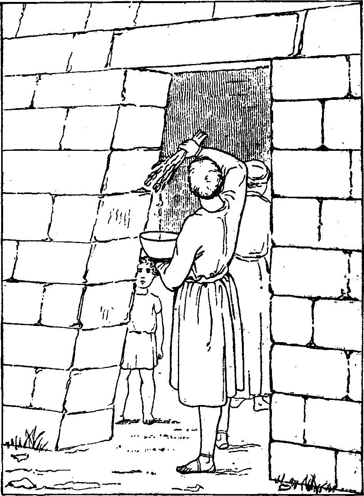The Sprinkling of the Blood of the Typical Lamb.—Exod. 12:22. The Precious Blood of Christ effects the Pass-Over of the Church qf the First-born, through whom All are to be Blessed.—Gal. 3-'2g.
** Herein is Love, not that We loved God, but that He loved Us, and sent His Son to be the Propitiation for our Sins.”—I John 4 : 10.
** He Died for All, that They which Live should not henceforth Live unto Themselves, but unto Him Which Died for Them, and Rose again.”— 2 Cor. 5; 15.
Her glory and exceeding joy In symbols now appear; 7
Yet, of that grace without alloy, She has a foretaste here.
Now she’s a troop of “soldiers” Following Christ’s command, His flock of “ sheep ” well tended, And fed by his own hand, f
She’s a band of the Lord’s “ brethren” Of whom he’s not ashamed,
And the very “ salt of earth,” J The Lord himself has claimed.
Ay, more: the “ light of earth ” is she, Amidst gross darkness shining, §
Since her dear Lord his light withdrew l^rom men, the undeserving.
A pure and “ virgin ” Church is she, Espoused unto her Lord. ||
Like a meek and comely maiden She trusts his faithful word.
F 42 WONDERFUL STOR Y. !> > ---------------------------------------------------------------------------
;! But when she has crossed the borders I; Into the promised land,
I; His glorious Bride and full joint-heir,
<: She’ll be at Christ’s right hand. 8
Together, they’ll be a “ Priesthood,”
! A “Royal Priesthood,” too; f ; And their royal, priestly power ; Shall make earth’s all things new.
I Then, together they’re presented ; As King, enthroned and great; | ; Jesus as the head considered, 1 And the body, his elect.
! This Christ shall be the Prince of Peace,
; “ Wonderful,” “ Counselor;”
A “ Mighty God ” of truth and grace,
•I Man’s “ Everlasting Father.” §
j As mighty Prophet, Priest and King, I In “Times of Restitution,”^
!; He shall to men salvation bring— ;! An' everlasting portion.
Wonderful Story
taught typically by booses.—Jobjn5:46.
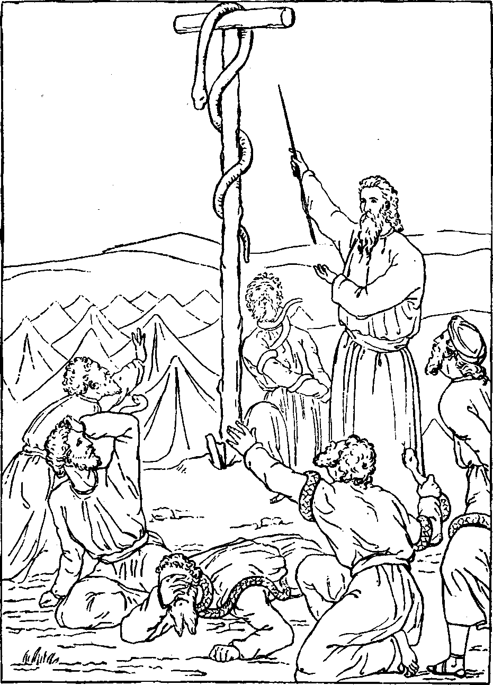“ As Moses lifted up the Serpent in the Wilderness, even so
Must the Son qfMan be lifted up, that Whosoever Believeih
in Him should not Perish, but have Eternal Life.”—John 3:14-1$.,
“ He hath made Him to be Sin for Us, who Knew no Sin; that We might be Made the Righteousness of God in Him.”—2 Cor. $ : 21.
“ Like as Christ was Raised up from the Dead by the Glory of the Father, even so We also Should Walk in Newness of Life.”—Rom. 6 : 4.
But to share this exaltation, Christ’s Bride must like him be;
And the “first resurrection” 9
Shall complete her perfectly.
Though this chief and heav’nly portion “The Elect” alone shall gain,
Yet for others there’s salvation From every sinful stain.
Such of all earth’s many millions
As obey “That Prophet’s” voice f Shall be pluck’d from death’s dominion, Choosing life, may have their choice.
Yet remember, all this blessing
Which to earth and men shall come
Is dependent on Christ’s coming: Hence we pray, Thy Kingdom come.
To claim hisBride he comes with stealth9 Not then to men appearing; [wealth, First she’s endowed with pow’r and Then comes the world’s great blessing.
This Christ, the cSun of Righteousness,’ Shall rise with healing beams, And, as the glorious years progress, Sweet peace shall flow in streams. *
There naught that’s wrong shall be termed right,
Nor right as wrong appear; f The Lord, the Way, the Life, the Truth, Shall make the right most clear.
CHRIST’S PAROUSIA AND THE GOSPEL HARVEST.
When for his Bride the Lord has come With joy and glad surprise,
His presence she will recognize By faith’s anointed eyes. J
Then soon she will be like him
And see him as he is—§
When her blessed hope’s fruition The heavenly Father gives.
Quickly she hears his welcome voice, Not borne upon the wind;
Nor in the secret chamber || Does she her loved one find.
* Isa. 66:12. f MaL 3:18. J 2 Cor. 5:16.
J I John 3:2. || John 10:4,5; Matt. 24:26.
Woijderful Story
’Flje *Fhing J^Ieedful Oft Forgot. 10
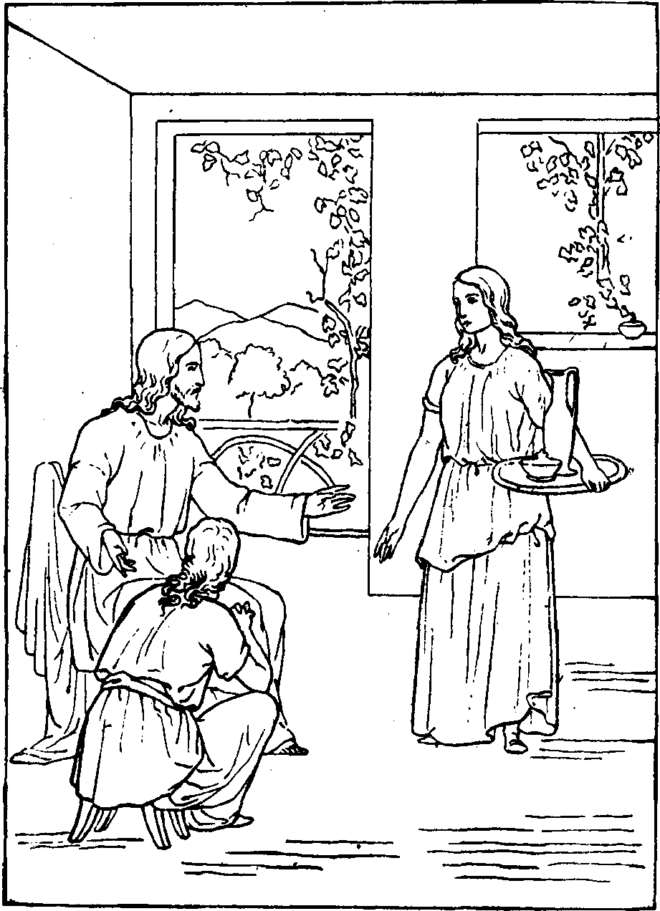“ Whatever Ye Do, do it Heartily as to the Lord —for Ye Serve the Lord Christ.”-—Col. 3 : 23, 24.
li Blessed are those Servants whom the Lord when He Cometh shall find Watching : Verily, I say unto you, that He shall Gird Himself, and Make Them to Sit down to Meat, and will Come Forth and Serve them.”—Luke 12 : 37.
But in the prophecies fulfilled, * And in the signs foretold, By faith, with fullest confidence, She doth her Lord behold.
For him she long has waited And watched by night and day;
And, for his promised kingdom, She has never ceased to pray, f
Christ’s appearing to the world at large Will be in wrathful token, J
With “ iron rod” and heavy scourge, Because God’s law they’ve broken.
Human pride will not be willing To yield to his control;
And selfishness will aggravate The weakness from the fall.
The kings of. earth and lords of lands, The rich and clergy, too,
Will cling to pow’r within their hands As erst they used to do.
“ A time of trouble ” there shall be On every tribe and nation;
With fear and trembling earth shall see Her greatest tribulation. §
* Matt. 24:33. f Matt. 6:10. J Matt. 24: 30; Rev. 1: 7; 2:27. | Dan. 12:1.
Empires and thrones shall disappear, And creeds and systems fall;
And on their ruins God will rear
His kingdom over all.
Yet to men this tribulation
Is a blessing in disguise.
The desire of every nation—* God’s Kingdom—then shall rise.
TIMES OF RESTITUTION, t
That is the good time coming, though This dark night lies between, Whose gathering shadows even now By thinking men are seen.
’Twill teach mankind the lesson Which eternally will last—
That sin brings tribulation, And virtue' blessings vast.
Then fetters and bonds all broken, Earth’s idols all destroyed,
The bow of peace, God’s token, O’er man shall e’er abide.
Knowledge of God shall fill the earth As waters cover the sea; J [mirth And praise, thanksgiving, and voice of Make sweetest melody.
* Hag. 2: 7. f Adis 3:19-21. J Isa. II: 9.
Vlje 'Wonderful Story Foresljadowings of Coming ^Blessings.
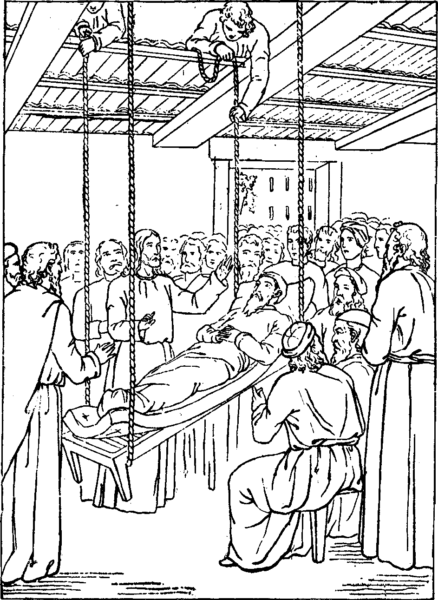'* Son, thy Sins be Forgiven thee!—Whether is it Easier to say— Tky Sins be Forgiven thee, or to say, Take up thy Bed and Walk ?— The Son of Man hath Power on Earth to Forgive Sins.”—Mark 2:£-12.
“ Times of Refreshing shall Come from the Presence of the Lord; and He shall send Jesus—Whom the Heavens must Retain until the Times of Restitution of All Things which God hath Spoken by the Mouth of All His Holy Prophets since the World began.”—Adis 3 : 19—21.
There joyfully men will press along The highway to perfection, *
With faith and hope and courage strong Under divine direction.
When crowned at last with perfect life And everlasting joy, [praise—
They’ll raise to heaven their notes of Through Christ this Victory ! f
[And those who shall refuse him— Few, exceptions of the race—[earth, Who, when clear knowledge fills the Reject the proffered grace—
These shall no further thus proceed: A second time they’ll die;
They’ll be cut off, as God hath said The soul that sins shall die.
Their souls, redeemed by Jesus’ blood From the Adamic fall,
They’ll forfeit by not willing good— The terms of life to all.] j
THE RANSOM, THE BASIS OF BLESSING.
Thus will the work be finished Because our debt was paid, Because on Christ, the righteous, The sin of all was laid.
* Isa. 35 :8. f Rev. 5:13. J Acfts 3:23; Heb. 6 :4-6; 10: 26.
Wherefore, because Christ did this He’s now exalted high, * [work, To nature and to power divine, f
Never again to die.
O, this wonderful redemption!
God’s remedy for sin;
The way to life is opened J That all may enter in.
Who, who hath been God’s counselor?
Or who hath known his mind? §
Not one of all the heav’nly host, And surely not mankind.
This wisdom, power, love and grace, His blessed Word reveals,
Are but the beamings of his face In whom all goodness dwells.
THE JOYFUL STORY.
Thus runs the old, old story.
Do you now take it in ?—
This wonderful redemption, God’s remedy for sin.
Search the Scriptures, and believe it;
The Bible says it’s true;
’Tis provided for all sinners, And therefore meant for you.
* Phil. 2:8-ii. f Rom. 6:9; Matt. 28:18.
J 2 Tim. 1:10. $ Rom. 11: 33-36.
Wonderful ^topy AVatep of Lxife frong the L:ife«(®iver.
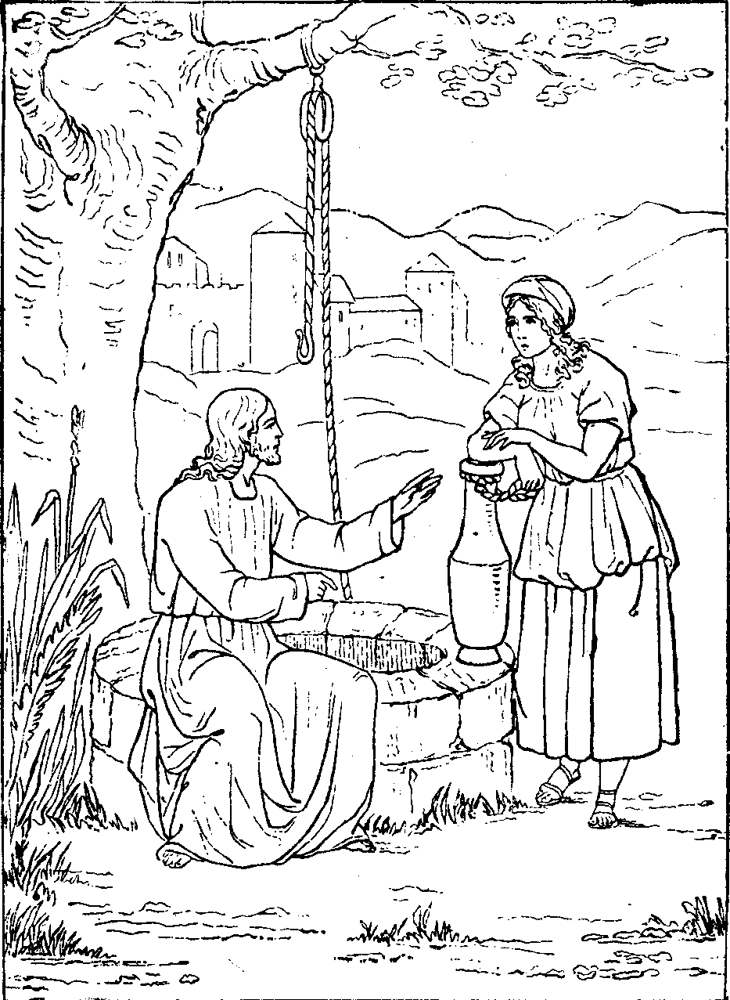“ fetus said unto het, If thou K’newest the Gift of God, and Who it is that Saith to Thee Give me to Drink; thou wouldest have asked of Him, and He would have Given Thee Living Water.”—John 4:10,
“ Thou hast the Words of Eternal Life. And We Believe and are Sure that Thou art that Christ, the Son of the Living God.”—John 6 : 68,69.
“ There is No Condemnation to them which are . in Christ Jesus, who walk not after the Flesh, but after the Spirit.”—Rom. 8: 1.
Then take this great salvation, Which our Father loves to give;
Just now by faith receive it, In due time you shall live.
And since this simple message Brings peace and joy to you, Make known the wondrous story;
For others need it too.
Go tell the blessed tidings That legally we’re free * From sin and pain and dying, To live eternally.
By faith enjoy the prospect now, And by and by fruition; f Let every act of life now show Your thanks for this salvation.
Soon shall our eyes behold it— Salvation from above !
The theme of this old storv
Of precious, heavenly love.
EXPERIENCE AND JOY OF THE SAINTS,
“ I love to tell the story Of gracious, heavenly love;
How Jesus left his glory, That wondrous love to prove.
* Rom. 8: i. f Rom. 8: 24.
“ I love to tell the story, Because I know it’s true;
It satisfies my longings As nothing else would do.
“ I love to tell the story !
More wonderful it seems
Than all the golden fancies Of all our golden dreams.
“ I love to tell the story !
It did so much for me;
And that is just the reason I tell it now to thee.
“I love to tell the story !
’Tis pleasant to repeat
What seems, each time I tell it, More wonderfully sweet.
“ I love to tell the story, For some have never heard
The message of salvation From God’s own holy Word.
“ I love to tell the story !
For those who know it best
Seem hungering and thirsting To hear it, like the rest.
“ And when, in scenes of glory, I sing the new, new song, ’Twill be the old, old story That I have loved so long.”
5Ixl^e Woijderful Story
*4 Ixove to T^ell the Story! It did so NJuch for NJe!”
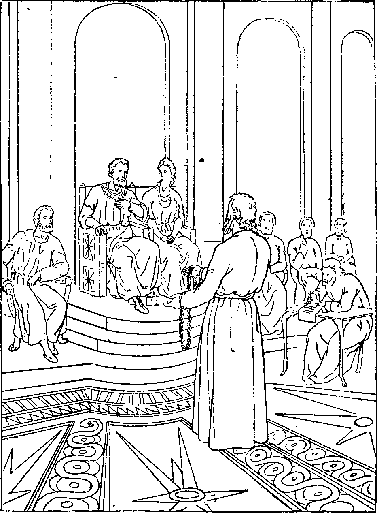Then Agrippa, said, Almost thou Persuadest Me to be a Christian / And Paul said, I would to God that All that Hear Me were Altogether such as I am, Except these Bonds.—Acts 26:28,2q.
“ Remember the Word that I said unto You, The Servant is not Greater than his Lord. If they have Persecuted Me, they will also Persecute You.”— John 15 : 20.
“ My Grace is Sufficient for Thee: for My Strength is made Perfect in Weakness.”—2 Cor. 12:9.
---TO---
THERE ARE E VIDENCES TH A T— .
Six Thousand Years from Adam ended in A. D. 1872. The Date of our Lord's Birth was October, B. C. 2. The Date of Annunciation to Mary, Dec. 25th, B. C.g. The Date of our Lord's Baptism was Oct., A. D. 2g. I'he Date of our Lord's Crucifixion, April, A. D, gg. The “Seventy ICeeks" of Israel's favor ended A, D.g6. The Jewish Age “Harvest" was 40 years, A. D. go to 70. The Christian Age “ Harvest f 40yrs., A. D. iSyy-rgry The Jewish Jubilees were Typical of the “ Times of
Restitution of all Th ings. ’ ’ —A els g: icy 21.
The Tyfiical Jubilees Mark the Date of their Antitype. The “ Times of the Gentiles" will End with A. D. igi4. The Jewish Age, in Its Length, Its Ceremonies, etc., Typified the realities of the Christian Age and its Length.
Elias or“ Elijah the Prophet" was a Type,—Howfulfilled. The Antichrist Has Come!—What? When? Where?
THESE SUBJECTS AND MANY OTHERS DEEPLY INTERESTING TO “THE HOUSEHOLD OF FAITH*’ AND “MEAT IN DUE SEASON” TO ALL WHO LOVE AND STUDY GOD’S WORD, CAN BE HAD IN
<fTbje Time is at |4ancl.”
360 PAGES—CLOTH BOUND, ONE DOLLAR ; PAPER COVERS, 25 CTS.
ADDRESS ORDERS TO
^ower ^Bible & Tract Society, “BIBLE HOUSE,” ARCH ST.,
ALLEGHENY, PA., U. S. A.
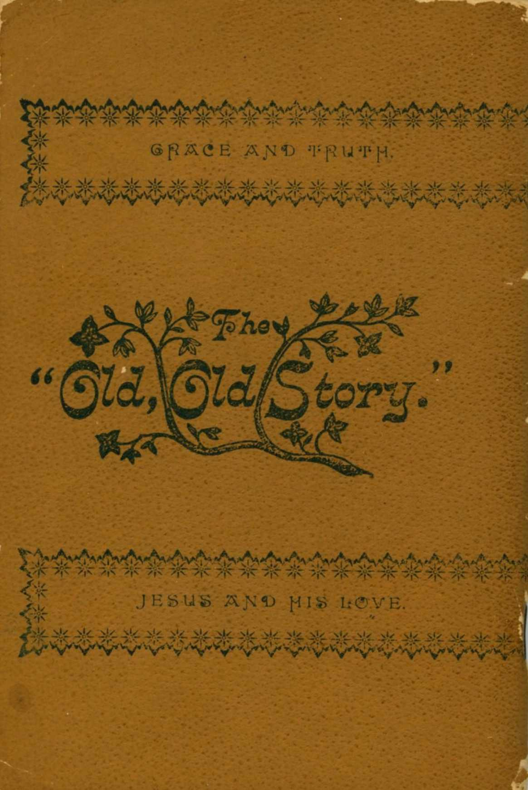Vanity of vanities! All is Vanity! ” said the Wise Man.—Eccles, i :i, 2. lt All Else my Soul has tried Left but an Aching Void.
Jesus has Satisfied! Jesus is Mine S'—saith the Christian.
Luke 2:10; f Gen. 3; f Gen. 2: 17, mar
gin ; Rom. 5 : 12 ; 6 : 23 ; $ John 3:16; || Job 1*4: *4? *A*3, *5 j/10: sa. 146: 3,47 £o7
3; Matt. 7:13.
Isa. 53: 3. f Isa. 53 :4. { Matt. 8:17.? Mark 5:3O; II John 17:4; 19:30.
Isa. 29 :18,19; 35 : 5. 6; John 5 : 28,29; Rev.
21:4. f Isa. 61:3; hsa- 85 :10; J John 7:46;
Matt. 7 : 28, 29; Mark 1:27, 28.
Isa. 35 : 9, io. f Isa. 35 : 1, 2 ; Isa. II :6-~9.
| 1 Cor. 15:25; Rev. 5 :10; 20:6; Isa. 32:1; Jer. 23:5; Gen. 28 :14. § I Cor. 15 124; Matt. 25:34; Psa. 8:5-8.
Rev. 3 : 4. f Rev. 21 : 2, 10. J Matt. 13 143 ; Mal. 4:2. <2 Pet. 1: 4 ;■ 1 John 3:2; I Cor. 6 : 2,3.
1 Cor. 10:17. t 2 Tim. 2:3,4; John 10: 4-15 ; Psa. 23. J Heb. 2 : 11; 3:1; Matt. 5 : I. § Matt. 5 : 14, 16; John I : 4, 5; John 9 : 3. 12:35. || 2 Cor. 11:2; Mark 13:35; Psa.$; 45:10,11,13,14.
Rev. 19:7; Rom. 8:17. f I Pet. 2: 5,9; Rev.
{ 21: 2,5. f Rev. 3 : 21;, 20:6; Col. 1:18. J Isa.
ft 9:6. 3:21-23; Heb. 7: 15, 17,1, 2.
i John 3:2; Rev. 20:6. f Deut. 18:15; A&s 3:22,23.
Jesus said unto her: Martha, Martha, Thou art Careful and Troubled about Many Things: But One thing is Needful, and Mary hath Chosen that Good Party—Luke 10:41, 42,